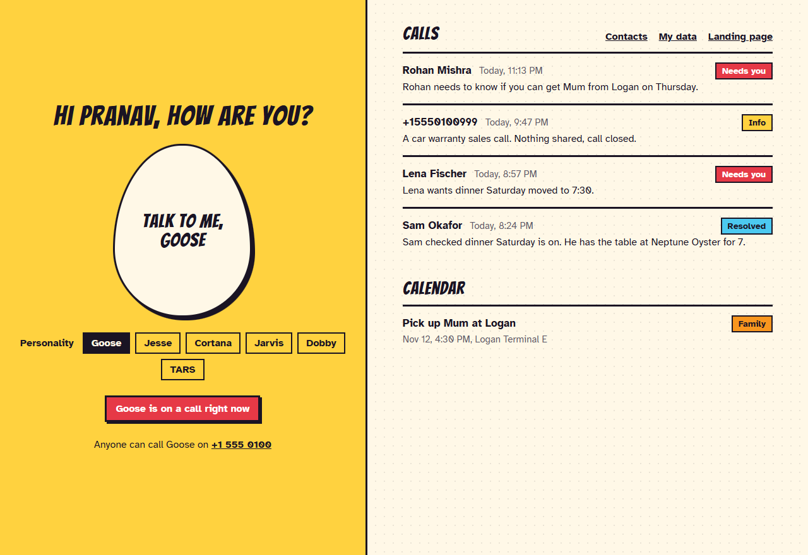
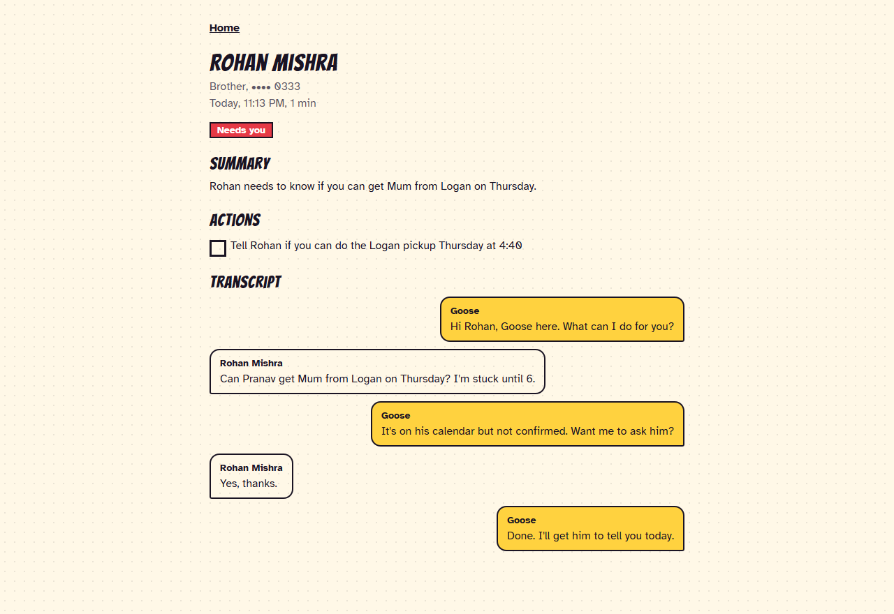
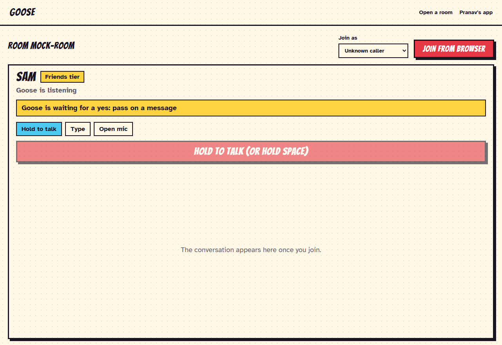
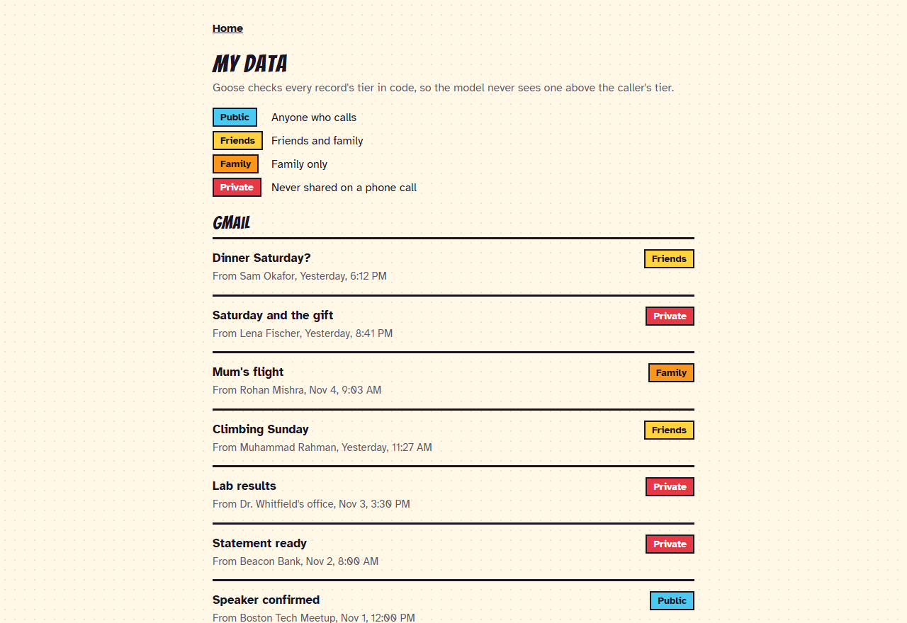

Talk to me, Goose.
Your assistant picks up when you can't. It knows who's calling, what they're allowed to hear, and when to pull someone else's assistant into the call. Interrupt it, go quiet, tell it to talk normal: it keeps its spine.
Pick who picks up.
Same brain, same rules about what it can say. The voice and attitude are yours. Strangers get the attitude; you get the soft version.
The app.
One place for everything Goose did while you were away, and one button to talk to it yourself. These screenshots use the mock data that ships with the repo.




How it works.
Each rule came from watching a real call go wrong.
Code decides
Fast models skip tools and invent actions. Anything that must happen, from the caller's tier to the goodbye, is enforced in code. The prompt only sets the manners.
Privacy is a filter
Records are public, friends, family or private. A stranger asking for your calendar gets busy blocks, because the titles were never in the prompt.
Context first
A known caller's emails, Slack threads, tasks and your free time are pulled before hello, so the first answer needs no lookup.
Asks before acting
Messages, bookings and summons wait for a spoken yes, in one short human question, never a read-back of arguments.
Holds its ground
Interruptions, silence, injection and "I'm his boss" change nothing. After three real violations it hangs up in its own words.
One line per model
STT, LLM, TTS and turn detection are config lines, chosen by measured A/B. Personalities plug into any agent.
Set it up.
Open source, Python, about five minutes. You need uv and a free LiveKit Cloud project.
Clone and install
The tests need no keys and spend nothing.
git clone https://github.com/PranavMishra17/talk-to-me---GOOSE.git cd talk-to-me---GOOSE uv sync uv run pytest -q
Look around with no keys
Fake data, no agent. Then open http://localhost:8000.
GOOSE_MOCK=1 uv run uvicorn app.api:app --port 8000
Add your keys
Copy the sample, fill in the three LiveKit values, then check them.
cp .env.sample .env uv run python scripts/check_env.py
Talk to it
Pick who's calling and type, in the terminal:
uv run python scripts/call.py
Or run every agent and the web app together, then open http://localhost:8000:
uv run python scripts/stage.py up
Give it a phone number
Rent a number in your LiveKit project, create a dispatch rule from
dispatch-rule.json, assign it to the number, and call.